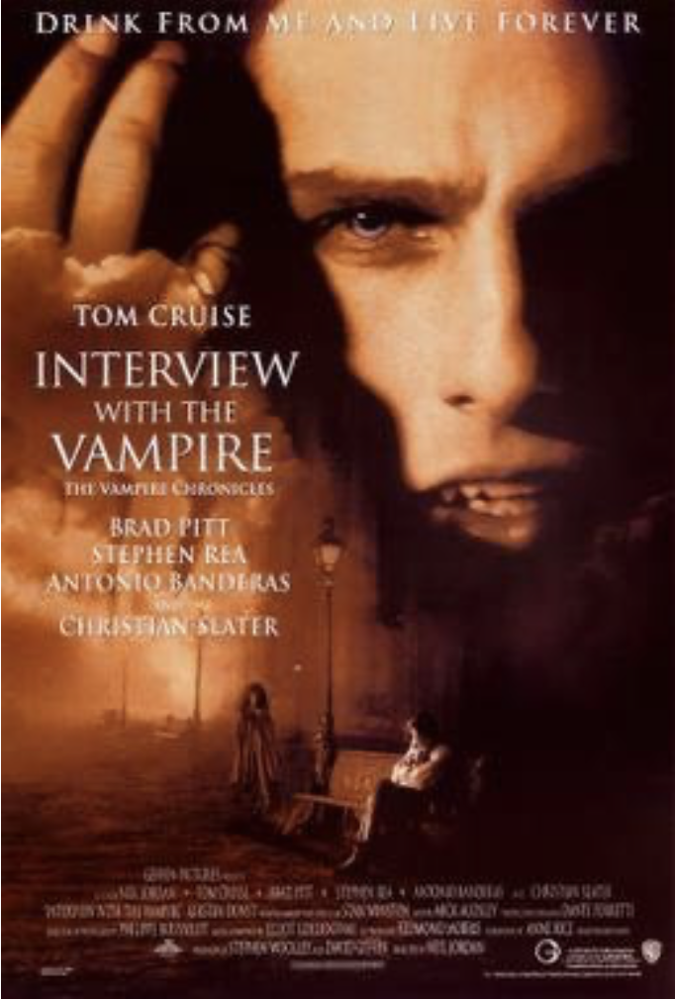

Movie poster for Interview with a Vampire
This is a #throwback and an #appreciationpost for Neil Jordan’s Interview with a Vampire (1994), based on Anne Rice’s 1976 legendary novel. It took Jordan’s incredibly sympathetic direction to human difference and moral failure to turn Rice’s story into a queer cult classic. Intentionally or not, Jordan’s adaptation teems with a rare, detached sensuality, much more profound and intellectual than usual queer depictions on screen. He even elicited an extraordinary performance from Kirsten Dunst, as the “doll child”, of the rowdy, vampire couple.
It is difficult not to read Rice’s story as an extended metaphor for queerness. The notion of objectifying a body to the point of claiming it’s life and then discarding it’s corpse, feels eerily familiar to anyone who has been part of the gay scene. Lestat (played by Tom Cruise, in probably one of his best screen performances), the ultimate seducer who sees something in Louis (played by the luminous Brad Pitt), that Louis himself doesn’t know, and who eventually falls in love with Louis, chasing him for all eternity.
Louis’ extraordinary self-awareness of what it means to be an outcast, that preys on other bodies to survive, puts him at a remarkable advantage in being one of the few vampires aware of how horrific this predatory instinct is. Louis was definitely my first romantic hero. Sadly he also taught me a very valuable lesson about self-awareness and moral action. Not because someone is aware of their moral failings or even the moral failures of the social group they belong to, will that immediately or directly translate in them behaving any differently.
Next year would mark thirty years since the film was released, making it, in my humble opinion, one of the most sophisticated and beautiful representation of queerness on screen, with phenomenal performances of fully heterosexual cast 😂